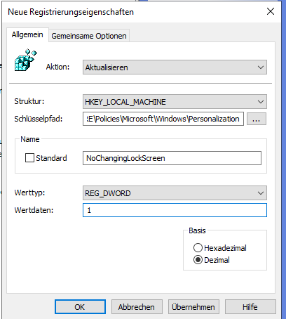
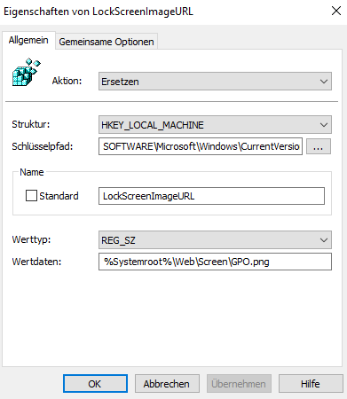
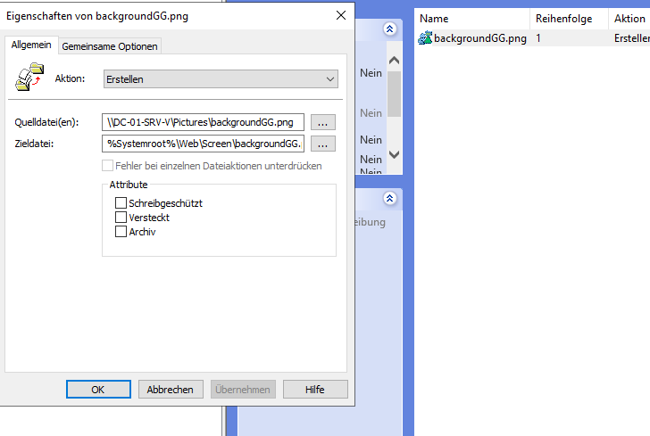
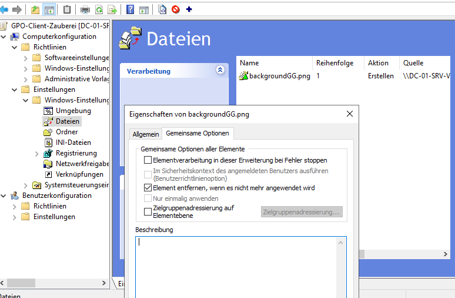
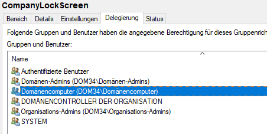

Implementierung von Active Directory Domain Services unter Windows Server 2022
Keeks
Netzwerk-Infrastruktur und Identitätsverwaltung
Domänenname
test.lab
Netzwerkstruktur
| Hostname | Betriebssystem | Rolle / Funktion | IPv4-Adresse |
|---|---|---|---|
| GT-01-SRV-V | Win Server 2022 Desktop | RRAS Gateway / Router | 192.168.178.2 (Ext) / 10.10.0.1 (Int) |
| DC-01-SRV-V | Win Server 2022 Desktop | 1. Domänencontroller (PDC) | 10.10.0.2 /24 |
| DC-02-SRV-V | Win Server 2022 Core | 2. Domänencontroller (ADC) | 10.10.0.3 /24 |
| Suse-Clie-01-V | OpenSuse Linux | Linux Test-Client | 10.10.0.6 /24 |
| Win-Clie-01-V | Windows 11 | Windows Test-Client | 10.10.0.7 /24 |
Benutzerkonten
| Kategorie | Name / Account | Info / Gruppe |
|---|---|---|
| Admin | Administrator | Domänen-Administrator |
| Extern | Ben Utzer | Test-User |
| Extern | Karsten Knall | Test-User |
| Lokal | FreeSeb | Lokaler Admin (Workstation) |
Sicherheitsgruppen
| Name | Info |
|---|---|
| Reudnitz | Globale Sicherheitsgruppe |
| Shadow Password Group | Globale Sicherheitsgruppe |
Vorgehensweise
-
Windows Server unter Windows 11 mit Hyper-V installieren
Besonderes Augenmerk dabei auf die Konfiguration des virtuellen Switches legen. Bei Windows 11 übernimmt der Default Switch NAT und DHCP, bei Windows Server ist diese Konfiguration nicht vorhanden.
-
Alle verfügbaren Systemsicherheitsupdates Installieren und neu starten
-
Grafikkartentreiber (wenn nötig für zweiten Bildschirm) installieren
-
IP-Konfiguration für Rechner vergeben
Server mit statischen IP’s versorgen entsprechend der Netzwerk-Infrastruktur
-
Virtuelle Netzwerkschnittstelln in Hyper-V erstellen
Einmal intern (NATintern) und extern(NATextern)
Einrichten der Virtuellen Maschinen mit sofortiger Prüfpunkterstellung nach Einrichtung.
-
Jede Maschine zuerst Updaten und Installation des Grafiktreibers überprüfen, sollte zweiter Bildschirm benötigt werden.
-
Außerdem den PC-Namen ändern, dazu in Einstellungen > System > Info auf “Diesen PC umbennen” klicken und den geforderten Neustart ausführen.
-
Deaktivieren der Automatischen Prüfpunkte zum Sparen von Festplattenkapazität im begrenzten Home-Setup. Produktive Systeme sollten hier auf Sicherungskonzepte setzen.
-
Das Konfigurieren der DNS-Server, setzt vorraus dass in einer Domäne mit mehr als einem DC der erste DNS-Eintrag zwingend auf den zweiten Domänencontroller mit aktivem DNS verweisen muss.
Gatewayserver GT-01-SRV-V
- Um die Kommunikation zwischen den einzelnen Rechnern im eigenen Netz zu ermöglichen, wird zuerst ein Gatewayserver Mit RRAS (Routing und RAS) konfiguriert. Genaue Einstellungen hierzu sind in meinen Unterlagen leider nicht mehr vorhanden. Generell reicht es aus einen Headless Server zu konfigurieren mit Ip-Konfiguration 192.168.178.2 (Externe Schnittstelle) / 10.10.0.1 (Interne Schnittstelle). Detailierte Beschreibungen dazu bitte im Netz nachschlagen :)
Erster Domänen controller DC-01-SRV-V
- In der grafischen Oberfläche des Server Manager AD Domänendienste, DNS und Weiterleitungen im DNS Konfigurieren. Hier bietet sich z.B.: 86.54.11.1 → DNS4EU als Europäischer anbieter an. Ich habe zum Testen der Konfiguration erstmal google DNS genutzt (8.8.8.8).
Hier noch die Befehle für die Kommandozeile zur Domänenerstellung
“Install-WindowsFeature -Name AD-Domain-Services -IncludeManagementTools”
$password = ConvertTo-SecureString "DeinPasswort123!" -AsPlainText -Force
Install-ADDSForest -DomainName "test.lab" -DomainNetbiosName "TEST" -InstallDns:$true -SafeModeAdministratorPassword $password -NoRebootOnCompletion:$false
Zeitserver umlegen mit dem Befehlszeilentool w32tm. Konfigurieren der Zeitsynchronisierung per fester externer Quelle über die Befehlszeile für den PDC Primary Domain Controller zur Sicherstellung der korrekten Funktionalität von Kerberos und AD-Replikation
# Einstellungen setzen
w32tm.exe /config /syncfromflags:manual /manualpeerlist:131.107.13.100,0x8 /reliable:yes /update
# Updaten der config
w32tm.exe /config /update
Anlegen der OU's (Organisational Units's) in der Power Shell
# 1. Haupt-OU Labor
New-ADOrganizationalUnit -Name "Labor" -Path "DC=test,DC=lab"
# Basispfad für die Unter-OUs
$basePath = "OU=Labor,DC=test,DC=lab"
# 2. Die 5 Haupt-Unter-OUs erstellen
New-ADOrganizationalUnit -Name "Administration" -Path $basePath
New-ADOrganizationalUnit -Name "Benutzer" -Path $basePath
New-ADOrganizationalUnit -Name "Server" -Path $basePath
New-ADOrganizationalUnit -Name "Clients" -Path $basePath
New-ADOrganizationalUnit -Name "Ressourcen" -Path $basePath
# 3. Unter-OUs für Benutzer
$benutzerPath = "OU=Benutzer,OU=Labor,DC=test,DC=lab"
"Marketing", "Vertrieb", "Extern" | ForEach-Object {
New-ADOrganizationalUnit -Name $_ -Path $benutzerPath
}
# 4. Unter-OUs für Server
$serverPath = "OU=Server,OU=Labor,DC=test,DC=lab"
"Domänencontroller", "Member" | ForEach-Object {
New-ADOrganizationalUnit -Name $_ -Path $serverPath
}
Write-Host "Deine angepasste OU-Struktur wurde erfolgreich erstellt!" -ForegroundColor Cyan
Zweiter Domänencontroller als Headless Server (Ohne GUI) DC-02-SRV-V
- Zuerst Namen vergeben und Neustart ausführen über: sconfig -> Option 2 (Computername)
IPv4 Konfiguration über die PowerShell
#Neue IP-Konfig
New-NetIPAddress -InterfaceIndex 6 -IPAddress 10.10.0.3 -PrefixLength 24 -DefaultGateway 10.10.0.1
#DNS auf ersten DC setzen und als zweiten Loopback
Set-DnsClientServerAddress -InterfaceIndex 6 -ServerAddresses ("10.10.0.2", "127.0.0.1")
AD Domänendienste , DNS Konfiguration über PwerShell vornehmen.
# 1. DSRM Passwort (für diesen neuen DC) festlegen
$dsrmSafe = ConvertTo-SecureString "DeinPasswort123!" -AsPlainText -Force
# 2. Den Befehl in einer einzigen Zeile ausführen
Install-ADDSDomainController -DomainName "test.lab" -InstallDns:$true -Credential (Get-Credential) -SafeModeAdministratorPassword $dsrmSafe
Diese Aktion führte auch bei vorherigen Installationen immer wieder zu Problemen. Auch bei dieser Installation. Die folgenden Schritte sind Teil der Fehleranalyse und Fehlerbeseitigung.
Fehlersuche Headless Server DC-02-SRV-V
- Beim weiteren Installationsprozess treten Fehler auf. Nach Rechereche und Auslesen des Fehler-logs konnte ich folgendes finden:
Get-Content C:\Windows\debug\dcpromo.log -Tail 50
“01/11/2026 00:36:42 [INFO] EVENTLOG (Error): NTDS Database / Sicherung : 2542
Vom Verzeichnisserver wurde festgestellt, dass die Datenbank ersetzt wurde. Dies ist ein ungesicherter und nicht unterstützter Vorgang. Der Dienst wird beendet, bis das Proble behoben ist. Benutzeraktion: Stellen Sie die vorherige Kopie der auf diesem Computer verwendeten Datenbank wieder her.
01/11/2026 00:36:42 [INFO] EVENTLOG (Informational): NTDS General / Dienststeuerung : 1004
Die Active Directory-Domänendienste wurden heruntergefahren.
01/11/2026 00:36:42 [INFO] Error - Bei der Installation der Active Directory-Domänendienste ist ein unbekannter Fehler
aufgetreten. (8200)
01/11/2026 00:36:42 [INFO] Es wird versucht, den \Registry\Machine\System\CurrentControlSet\Services\NTDS-Registrierungsschlüssel wiederholt zu löschen (DeleteRoot=0).
01/11/2026 00:36:42 [INFO] Es wird versucht, den \Registry\Machine\System\CurrentControlSet\Services\NTDS\Diagnostics-Registrierungsschlüssel wiederholt zu löschen (DeleteRoot=1)
-
Das öffnen der Firewall Profile und das erhöhen der MTU, um Abgewiesene Pakete durchzulassen und Netzwerkprobleme auszuschließen, brachte keinen sichtbaren Erfolg. Nun hängt die Installation beim Prüfen der Vorraussetzungen und lässt sich nicht abschließen.
-
Da kaum Einstellungen verloren gehen ist es am sinnvollsten den Server neu aufzusetzen. Vor Allem DNS Einträge prüfen.
-
Vielleicht gab es Probleme durch ein falsches Anmeldenamensformat? Im nächsten Anlauf im NET-BIOS Format anmelden: test.lab\Administrator
Zu diesem Zweck erstell ich ein neues Benutzerkonto und füge es den relevanten Administatorengruppen hinzu.
- Nun Erstmal alles Deinstallieren und die Verzeichnisse frei machen:
Uninstall-WindowsFeature AD-Domain-Services -Force
# 2. Datenbank- und Log-Ordner physisch löschen
Remove-Item -Path "C:\Windows\NTDS" -Recurse -Force -ErrorAction SilentlyContinue
Remove-Item -Path "C:\Windows\SYSVOL" -Recurse -Force -ErrorAction SilentlyContinue
# 3. Neustart erzwingen, um Registry-Sperren zu lösen
Restart-Computer -Force
Zweiten DC erneut sauber installieren
Der DC darf vor Hochstufung NICHT teil der Domäne sein. Er tritt über die Hochstufung zum DC der Domäne automatisch bei. Die Anmeldung im NET-BIOS Format und dem Befehl Get-Credential war die richtige Wahl. repadmin /replsummary - > Keine Sicherheitskonflikte mehr.
PowerShell Befehle
#Dieser Einzeiler hat nun den gewünschten Effekt
Install-ADDSDomainController -DomainName "test.lab" -InstallDns:$true -NoGlobalCatalog:$false -NoRebootOnCompletion:$true -Force:$true -SafeModeAdministratorPassword (ConvertTo-SecureString 'DeinPasswort123!' -AsPlainText -Force) -Credential (Get-Credential "test.lab\<Nutzername>") -Verbose
#Bericht über Replikation ergibt nun 0/5 Fehlern
repadmin /replsummary
Win-Clie-01-V
- Windows Installation standardmäßig über Hyper-V
- Für die Installation erstmal die Netzwerkkarte deaktivieren zur Umgehung des Online-Accountzwangs.
Bei Installation den Online Account umgehen mit PowerShell SHIFT + F10 während Installation
OOBE/BYPASSNRO
Nachträgliche Netzwerkkarteneinstellung während Installation in der Konsole
# Netzwerk-Konfiguration
Get-NetAdapter
New-NetIPAddress -InterfaceIndex 6 -IPAddress 10.10.0.3 -PrefixLength 24 -DefaultGateway 10.10.0.1
Set-DnsClientServerAddress -InterfaceIndex 6 -ServerAddresses ("10.10.0.2","10.10.0.3")
- Updates Installieren und Update Cache bereinigen
Bereinigen des Update Caches nach Updatets für saubere SysPrep Erstellung
Stop-Service wuauserv
Remove-Item -Path C:\Windows\SoftwareDistribution\Download\* -Recurse -Force
Start-Service wuauserv
Nach Anmeldung mit lokalem konto wird das Administratorkonto aktiviert um sich damit anzumelden. Dann wird der lokale Nutzer mit dem Administratorkonto gelöscht. Nun ist die Windows Version SysPrep bereit.
# 1. Das echte Administrator-Konto aktivieren
net user administrator /active:yes
# 2. Passwort vergeben
net user administrator *
Nun Sysprep durchführen
& $env:SystemRoot\System32\Sysprep\sysprep.exe /oobe /generalize /shutdown /mode:vm
-
Nach dem Erstellen der sysprep muss der Prüfpunkt in Hyper-V gelöscht werden, damit die beiden Datendateien zusammengeführt werden können und so eine einzelne Festplatte entsteht. Diese kann nun beliebig kopiert werden
-
Der PC wird nun noch in die Domäne aufgenommen und ist dann Einsatzbereit Systemsteuerung -> System -> Computername, Domäne -> ändern
Linux Maschine Suse-Clie-01-V
-
Über Hyper-V installieren.
Secure Boot muss deaktiviert werden, da Linux sonst nicht startet.
Technisch liegt es daran, dass die UEFI-Firmware nur digital signierten Code ausführt und der openSUSE-Kernel sowie Drittanbieter-Module (z. B. NVIDIA) nicht direkt von Microsoft, sondern über den eigenen Machine Owner Key (MOK) verifiziert werden müssen. Scheitert der Start, wurde dieser MOK entweder nicht im MokManager registriert oder die Firmware blockiert die Ausführung von Drittanbieter-Zertifikaten über den Shim-Bootloader.
Die Grundeinstellungen für IP und Hostname werden über die grafische Oberfläche vorgenommen. Dabei Ping, DNS Konnektivität und Zeit prüfen. Wenn Ping zur Domäne gelingt und der Name aufgelöst werden kann, weiter mit nächstem Schritt.
#Status der NIC -> "up" = gut
ip link
#Ip-Konfig abfragen
ip addr
# Ping (-c 4 sendet 4 Pings)
ping -c 4 gateway
ping 8.8.8.8
ping hostname
ping auf Domänencontroller
# Auflösen der DC
host test.lab
#Zeitabweichungen bestimmen
timedatectl
Nach der Vergabe der richtigen Searchdomain wird mit dem Linux Tool realm der Ad Beitritt vorbereitet und schlussendlich der Domäne beigetreten
# Installieren der Abhängigkeiten
sudo zypper install realmd adcli sssd sssd-ad
# Überprüfen der Konnektivität und
# Anzeigen der zu installiernden Abhängikeiten
# (Samba-client und sssd-tools müssen eventuell noch hinzugefügt werden)
sudo realm discover test.lab
# Der Join in die Domäne
sudo realm join -U Administrator test.lab
# Identitätsdienst nochmal "anschubsen"
sudo systemctl enable --now sssd
# Home Verzeichnis für Windows User erlauben
sudo pam-config -a --mkhomedir
Hier noch eine kleine Anleitung, damit keine FQDNS beim Anmelden genutzt werden müssen:
# Konfigurationsdatei öffnen
sudo nano /etc/sssd/sssd.conf
# Zeile suchen
use_fully_qualified_names = True
# Ändern
use_fully_qualified_names = False
# Speichern mit Strg+O, Enter und Schließen mit Strg+X.
# Dienst neu starten:
sudo systemctl restart sssd
# Domänen-Admin zum lokalen Admin machen (optional)
sudo usermod -aG wheel <Nutzername>
Firmenlogo per Netzwerkfreigabe Importieren für Hintergrundbild
# Verzeichnis erstellen
sudo mkdir -p /usr/share/wallpapers/custom
# Import starten über Netzwerkfreigabe
sudo smbget smb://<Nutzername>@dc-01-srv-v/Pictures/backgroundGG.jpg -o /usr/share/wallpapers/custom/backgroundGG.png
AD-DS Konfiguration
Wichtige Ports in Active-Directory (Firewall Ausnahmen)
| Dienst | Protokoll | Port |
|---|---|---|
| LDAP | TCP/UDP | 389 |
| LDAP über SSL (LDAPS) | TCP | 636 |
| Global Catalog | TCP | 3268 |
| Global Catalog über SSL | TCP | 3269 |
Der Wert ms-DS-MachineAccountQuota attribute sollte mit PowerShell auf Null gesetzt werden. Ansonsten können normale Computer Accounts bis zu 10 Computer Objekte in AD anlegen.
# Prũfen des wertes ms-DS-MachineAccountQuota
Get-ADObject -Identity ((Get-ADDomain).distinguishedname) -Properties ms-DS-MachineAccountQuota
# Wert auf Null setzen
Set-ADDomain -Identity (Get-ADDomain).distinguishedname -Replace @{"ms-DS-MachineAccountQuota"="0"}
Erstellen Gruppenrichtlinien Teil 1
Viele Richtlinien unter Administrative Vorlagen -> Kontrollpanel -> Personalisierung (wie z. B. “Ein bestimmtes Standard-Sperrbildschirm- und Anmeldebild” oder “Sperrbildschirm nicht anzeigen”) werden von Windows 11 Pro schlicht ignoriert. In der GPO-Verwaltung kann man eisntellungen vornehmen und die EInstellungen sehen auch valide aus. Daher verwende ich drei Registry Einträge mit Verweis unter Computerkonfiguration → Einstellungen → Windows Einstellungen → Registrierung wobei die Verweise zur Zieldatei auf die lokalen Verzeichnisse geändert werden müssen.
Freigabe : \DC-01-SRV-V\Pictures\backgroundGG.png
lokaler Pfad: %Systemroot%\Web\Screen\backgroundGG.png
Die Pfade für die Werte (Freigabe und Speicherort) müssen eventuell in anderen Windows-Installationen geändert werden und sind hier nur symbolisch zu verstehen
Registry Eintrag in SOFTWARE\Policies\Microsoft\Windows\Personalization

Registry Eintrag in SOFTWARE\Microsoft\Windows\CurrentVersion\PersonalizationCSP

Nun wird über Computerkonfiguration → Einstellungen→ Windows-Einstellungen→ Dateien die Datei über die Bereitstellung lokal verfügbar gemacht

In den Eigenschaften der Datei noch Element Entfernen auswählen, dies ändert die Aktion beim Ausführen im ersten Reiter der Eisntellungen auf Ersetzen

Gruppenrichtlinienberechtigungen setzen (optional):

Überprüfen der Sicherheitsfilterung in den Gruppenrichtlinieneinstellungen und bei Bedarf noch Authentifizierte Benutzer (umfasst alle Domänenbenutzer UND Computer) hinzugefügen, um den Zugriff zu sichern. Im Fenster Sicherheitsfilter auf der ersten Seite und Deligierung auf dem letzten Reiter des GPO’s werden nun noch die Domänencomputer hinzugefügt mit der Berechtigung lesen.
Im Home Lab war das nicht nötig und auch in der Schule zeigte das nicht den gewünschten Effekt. also ist diese Einstellung erstmal mit vorsicht zu genießen. (Kontext: Seit einem Sicherheitsupdate (MS16-072) verlangt Windows, dass der Computer im Systemkontext die GPO lesen darf.)
ERFOLG!
Der Firmenweite Sperrbildschirm ist implementiert
Troubleshooting Work in Progress
-
Voraussetzungen und Vorgehensweise:
- Admin muss Mitglied in “Organisations-Admins” sein
- KDS Root Key erstellen
- Sicherheitsgruppe anlegen
- gMSA erstellen
- gMSA auf Servern installieren
- Dienst auf gMSA umstellen
- SPN prüfen
- SPN ggf. manuell setzen
-
Fehlersuche
-
Der Container “Key Distribution Service” muss im AD vorhanden sein. Erstellung erfolgt normalerweise automatisch. Alternativ über ADSI Editor → Namenskontext Konfiguration Pfad: CN = Services → hier “CN = Key Distribution Service” erstellen.
# Powershell Erweiterung erneut korrekt im system registrieren Install-WindowsFeature RSAT-AD-PowerShell # Reparieren der lokalen Windows Datei # (Reparatur des Windows-Komponenten-Store) dism /online /cleanup-image /restorehealth # Best PRactices Empfihelt die verwendung von sfc nach dism sfc /scannow # Danach frisches laden von Key Distribution Service Module Import-Module Kds -Force # Überprüfen des tatsächlichen Pfades mithilfe der PS # Suchen des Containers direkt über seinen Namen in der Configuration-Partition >> $target = Get-ADObject -Filter "Name -eq 'Key Distribution Service'" -SearchBase (Get-ADRootDSE).configurationNamingContext >> $target.DistinguishedName # Das Objekt nun in AD hinzufügen New-ADObject -Name "Key Distribution Service" -Type "container" -Path "CN=Services,$((Get-ADRootDSE).configurationNamingContext)"- Erkannte Fehler
- CN = Configuration war doppelt vorhanden, weswegen Windows nie den korrekten Pfad finden konnte
- Fehlercode 0x80070020 sperrt eine .dll Datei des KDS Moduls physisch auf dem Server → der bestehende lock ließ sich nicht umgehen
- Der Prozess scheint blockiert und lässt sich nicht “unblocken”
- Sharing Violations blocken den Zugriff bereits auf OS-Ebene
- Erkannte Fehler
-
Fazit
Die Implementierung der AD DS Umgebung unter Windows Server 2022 wurde erfolgreich abgeschlossen. Durch den Aufbau einer logischen OU-Struktur und die Anwendung zentraler Gruppenrichtlinien lässt sich die Infrastruktur effizient verwalten. Besondere Aufmerksamkeit galt der Kompatibilität mit Windows 11 Pro: Da Standard-GPOs für die Personalisierung in dieser Edition oft nicht greifen, wurde die Konfiguration über Group Policy Preferences (GPP) und gezielte Registry-Einträge realisiert. Dies stellt sicher, dass Design-Vorgaben und Sicherheitsrichtlinien auch ohne Enterprise-Lizenzierung zuverlässig auf den Clients angewendet werden. Die Integration eines Clienten unter Linux verlief Problemlos und eignet sich gut als Template für zukünftige Systemintegration.